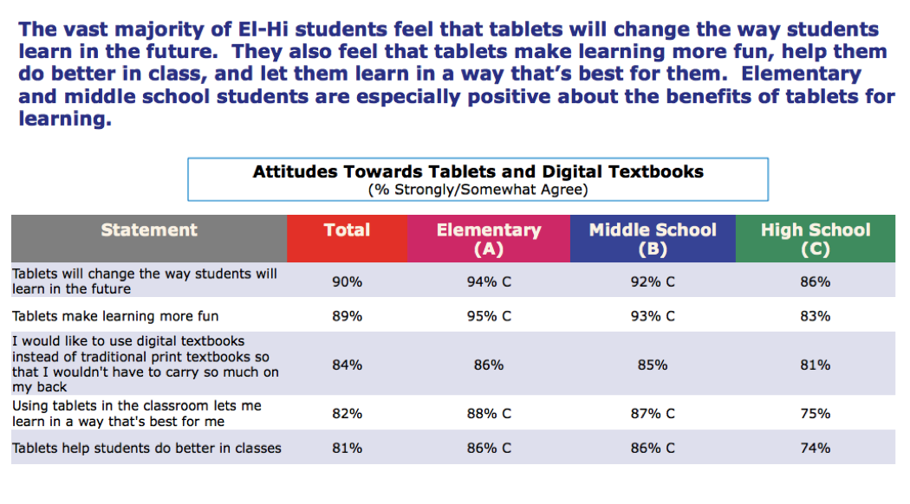
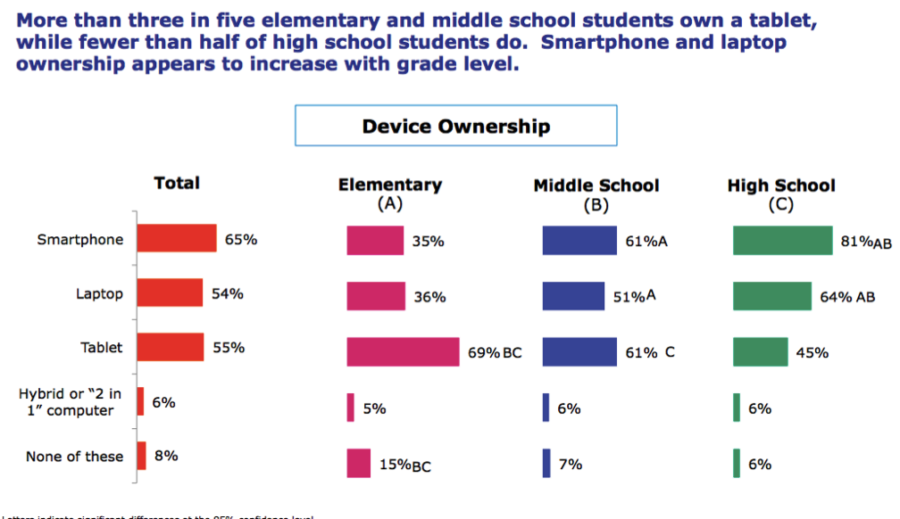
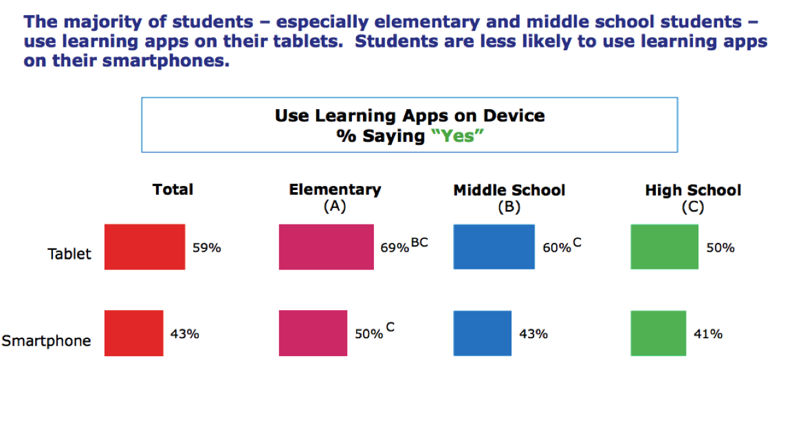
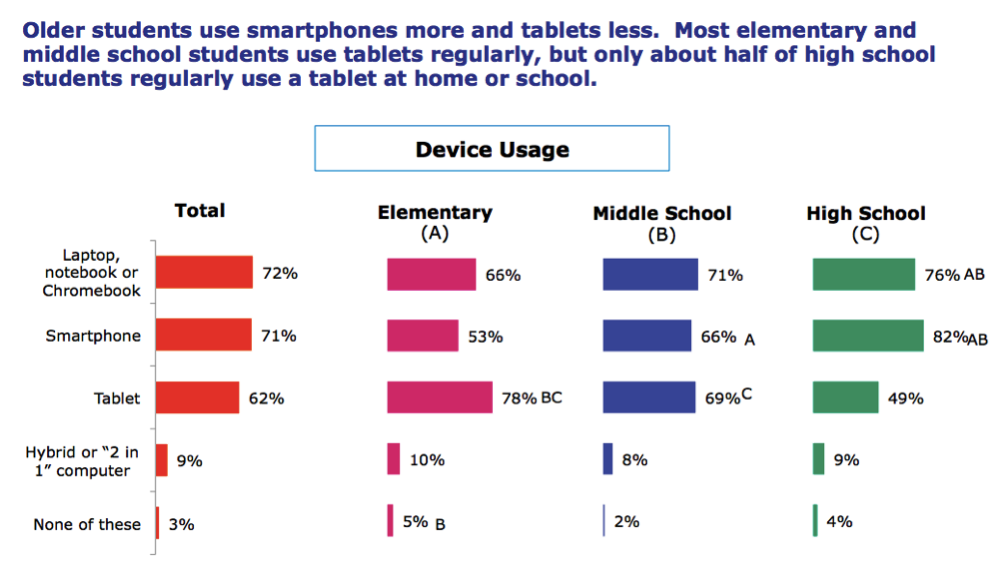

Week 1
25/11/17
Quantum Themes
Superstition: a quantum system can simultaneously be in two different states at once.
Entanglement: Two classical particles can be correlated with each other.
No cloning: cloning cannot be done, only noisy copies.
The delayed choice experiment: what happens in the present can change what happens(ed) in the past.
Path integral formulation: the probability of a particle that at some place will be at some different place later can be given by a rule.
27/11/17
A Few Initial Ideas
- Related to the delayed choice experiment, a user can make changes to the game’s past by going to specific locations and completing tasks. Their actions would affect the past in the game.
- Related to entanglement, two players are ‘entangled’ and both have to perform the same actions, such as going to a specific location.
- Related to no cloning, a game that tries to illustrate the impossibility of cloning by having two players trying to create the same pattern but with different shapes. Would need revisions to make it more location dependent.
- Related to path integral formulation of quantum mechanics, a chance game where a user can walk around to change where a user can walk to change a probability meter on an app, which shows the probability the particle will move to where the user is. The aim would be to find a location with a high chance of the particle moving to, to earn some kind of reward.
01/12/17 – Game in a Week
Laying Down a Foundation
Applying the framework to the concept that demonstrates the path integral formulation.
Motivation
My motivation is to explore a particular concept. This game would be exploring the concept of the path integral formulation of quantum mechanics.
Aims
For participants, I want to make this theme of quantum mechanics easy to understand, through a fun, interactive experience.
The aim of the participants in the game would be to win the game, by successfully guessing where the particle will move.
Outcomes
The specific goals I have in mind are to create a fun, engaging app that is most importantly educational on this theme of quantum mechanics. The success of these goals will be measured through user testing.
Inspiration
Focus: People
The games I have found that have been designed for a similar audience focus on providing clear instructions and explanations, to educate the younger audience on a quantum theme.
They are also often fun and engaging, to make it feel like they aren’t educational.
Site
My concept does not require a large site, but just enough room for the player to move around and change their position.
The style of site that would best suit the concept is an area of space based on the player’s location. For example, a radius of 15m around the player would be sufficient to play the game.
The properties the site would need to have are few obstacles and the ability to somehow be in most spaces of the site. There are few other requirements of the site, as the focus is not on the site itself but the space.
Focus: People
The target audience, being younger audiences, would most likely be found in their home. A player’s home would make a great site for the game.
People
The people that will participate in my experience would be those that have access to a phone, enjoy interactive games, and have an interest in quantum mechanics. This would most likely be the demographic of high school aged children.
The impact on people/bodies by activities occurring as part of the experience would depend on where the user plays the game. If played in the private of their own home, the only people that could be affected are those that also live in that home. If played in public, the public community may take notice of the activities involved in the experience, but this would have little impact on them.
Some statistics on elementary and high school aged students
   Resources
From a participatory point of view, it is assumed users will have basic skills, such as moving around, comprehending instructions and a basic understanding of technology. Very little resources are required for the game, just a space to move around in and some form of smart device.
From a development point of view, the knowledge to create the app will be required and an understanding of the path integral formulation of quantum mechanics.
New Aspect
A new aspect that could be introduced to the game is a timer that restricts the amount of time the player has to find a spot with high probability. This would improve the game by adding an element of urgency, making the game more difficult and also more entertaining.
Changed Aspect
A changed aspect for the game could be the motivation, aims and outcomes. The current aim of the participant playing the game is not very exciting. A possible change could be the player must try to get a particle in a hole, and the probability of the particle landing in the hole will change as they change their location.
This aspect would improve the framework by creating a clearer objective to the game, and a clearer method for how to win and lose. This new aspect would also allow for more advanced levels, with the hole becoming smaller as the level increases, making it harder to find a location with a high probability of the particle landing in the hole from that location.
See Annotations
Annotations:
Doing the game in a week, I interpreted the new aspects and changed aspects as new and changed aspects of the game, not of the framework. I learned in the studio that this was actually meant for the framework itself, although having to think of new and changed aspects of my game was actually helpful and really encouraged me to iterate on my design decisions and not become stuck in my ways. From this experience, I think a new aspect the framework could have is a ‘design variations’ that encourages the user to look back at different sections and re-think their decisions, or even just brainstorm alternative ways to do things so that they aren’t so focused on one idea (possibly even the first idea) that they might have thought of. This section could also involve some prompts to think outside the box with their project, such as the exercise we did in the studio session that involved thinking of a way to only use one button for each of our initial project ideas. Although these ideas may not be used in the final project, it helps to spark creativity and think about the project in a new way. This would improve the framework by encouraging more iteration on decisions, and looking back on sections of the framework in a new light.
Experience Itself
Theme/Narrative
Theme: chance/strategy
Narrative: the particle in context of quantum mechanics
Linear path: The ‘wrong’ path is choosing a position that doesn’t result in the particle landing in the hole. This doesn’t have any consequences, however the player would not advance in the game.
Hide
Week 2
02/12/17 - Game in a Week
Experience Itself
Theme/Narrative
Theme: chance/strategy
Narrative: the particle in context of quantum mechanics
Linear path: The ‘wrong’ path is choosing a position that doesn’t result in the particle landing in the hole. This doesn’t have any consequences, however the player would not advance in the game.